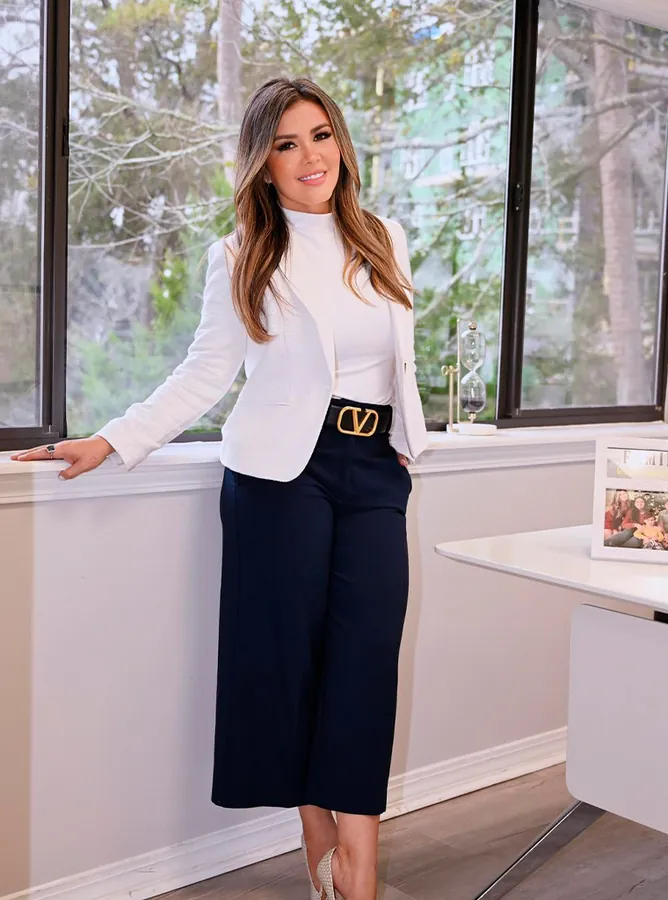
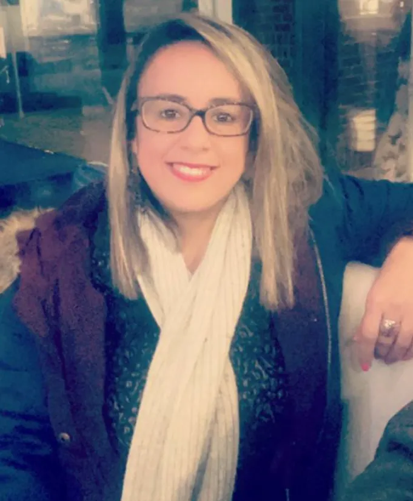
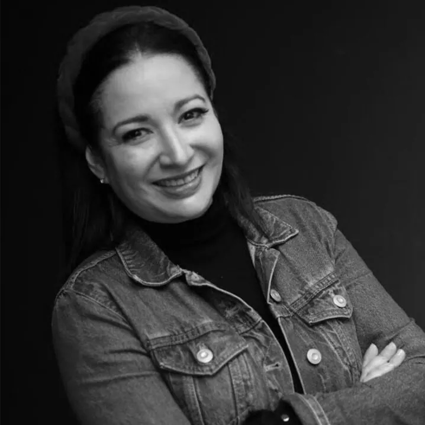

Inspirar al mundo con el poder del compromiso colectivo para fomentar un cambio positivo
Nuestro objetivo principal es fortalecer a las fundaciones para impulsar un cambio positivo en las comunidades.

Un pilar fundamental para las fundaciones
Inspirar al mundo con el poder del compromiso colectivo para fomentar un cambio positivo en nuestra comunidad. Buscamos crear conciencia sobre las fortalezas que surgen al unirnos para apoyar la construcción de un mundo mejor.
Nos comprometemos a ser un pilar fundamental para las fundaciones, fortaleciéndolas y potenciando sus resultados. Nuestra misión es servir de conexión entre benefactores y fundaciones, contribuyendo de manera positiva a sus propósitos.
¿Cómo ayudamos a generar un cambio positivo?
Nuestro objetivo principal es fortalecer a las fundaciones para impulsar un cambio positivo en las comunidades. Lo logramos mediante proyectos basados en tres pilares.
Generar conciencia
De responsabilidad social en la comunidad.
Crear conexiones
Para generar recursos económicos, materiales y humanos.
Capacitación continua
Para ONG en áreas de oportunidad.
Las personas detrás del trabajo
Un equipo de fundación, dirección y voluntariado comprometido con conectar e inspirar proyectos que impulsan un cambio positivo. Selecciona a una persona para conocer su historia.

Marykar Garcia
Presidencia y Marketing · Fundadora y miembro de la junta Leer biografía
Daysi Jacobson
Vicepresidencia y Finanzas · Fundadora y miembro de la junta Leer biografía
Patricia Tusanotte
Dirección de Administración y Voluntariado · Equipo voluntario Leer biografía
Vanezza Reyes
Dirección de Planeación Estratégica · Equipo voluntario Leer biografía
Claudia Farfan
Dirección de Patrocinadores y Donantes · Equipo voluntario Leer biografíaEmbajadores

Jackie Bunuelos
Embajador/a
Daysi Jacobson
EmbajadoraHacer del mundo un lugar mejor
Somos una organización sin fines de lucro que se enfoca en fortalecer a las fundaciones que trabajan bajo estos 6 objetivos sociales.
Dona ahora- 01Salud y bienestarPorque la salud es fundamental.
- 02Equidad de géneroTodas las personas merecen las mismas oportunidades.
- 03Desarrollo laboralImpulsamos la economía, una persona a la vez.
- 04Reducción de desigualdadesCreemos en construir puentes para cerrar las brechas entre comunidades.
- 05Alianzas para lograr objetivosCreemos en la colaboración.
- 06EducaciónCreemos en el poder transformador de la educación para construir un futuro más brillante y equitativo.

Conecta con nosotros para crear el cambio que deseamos
Si conoces una fundación que comparte nuestra pasión por el cambio y la colaboración… ¡contáctanos! Juntos podemos lograr un impacto aún mayor.